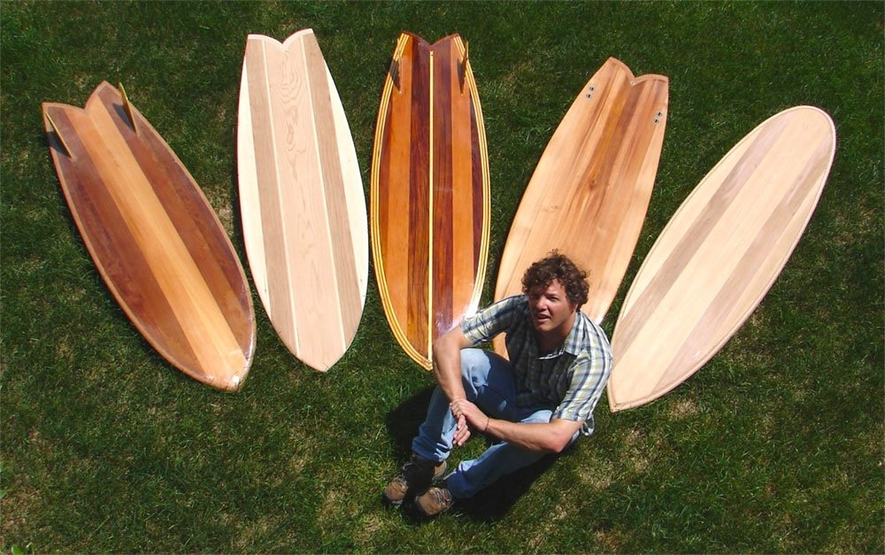

Wood, Water
& Waves
A wooden surfboard, grown from an island tree, shaped entirely by hand.
Wood, Water & Waves
A wooden surfboard, grown from an island tree, shaped entirely by hand.
Wood, Water & Waves
A wooden surfboard, grown from an island tree, shaped entirely by hand.
One tree. One board. Grown on Nantucket and shaped by hand, from soil to surf.
The board is shaped by Rich Blundell — co-founder and former chief designer and builder at Grain Surfboards — using an innovative new Strip and Feather method that refines the technique he pioneered. The work happens in a small shack on Nantucket: no factory, no molds, no shortcuts. Just a design, a stack of cedar, and a plane.
Nine feet of Nantucket cedar, taking on its skin.
The design is finished and every frame is cut — the whole set numbered and laid out in order, bow to tail. Slotted onto the spine, the drawing finally stands up: nine feet of skeleton on the shack floor. The first pieces are glued up in a sunburst of red and white heartwood, and the skin is coming together too — island cedar edge-glued into panels wide enough to take the whole outline, then cut to it. From here it is strips, glue, and a hand plane, all the way to the water.
This work has been written about for twenty years.
Wooden boards, and the ideas underneath them, have drawn writers since the first hollow cedar boards came out of a small shop in York, Maine. Four of those stories are below, along with a short film. Wood, Water & Waves is the next one — and it is only just starting.

How a wooden surfboard can improve our cosmic relationships.

Exploring the natural history of surfboards on Cape Cod.


The soil that fed it. The rain that swelled its grain.
The water it will ride. The wave that is older than memory.
One board, made from all of it.
Cut, shaped, and finished entirely by hand.
No molds, no shortcuts. The log is milled into strips, feathered along their edges for a seamless glue-up, and worked over the frame plank by plank until the hull takes its shape. What emerges is hollow, light, and strong — a board that carries the whole story of the tree it came from.

A summer of shavings and sawdust.
Where every board is headed.
A nine-foot hollow wooden surfboard built by hand from a single Nantucket cedar — light, strong, and made entirely from the island's wood.
Strip and Feather — an innovative hollow-wood technique refining the method Rich Blundell pioneered at Grain Surfboards.
A small shack on Nantucket, a short walk from the water.
Designed, framed, and skinned in progress as of August 2026 — the skeleton is standing, the deck and bottom panels are glued up, and the outline is cut. The build is open to being documented from here to the first wave.
A story about craft, place, and slowing down.
Wood, Water & Waves has a clear arc and it is starting now: a tree, a design, a stack of frames, and a board that ends up in the water. The whole build is ahead — which means a story can follow it rather than arrive after the fact.
High-resolution photography, build footage, and interviews are available. Rich is glad to talk on the record about hollow-wood construction, the Strip and Feather method, and where a board comes from before it is a board.
Rich Blundell
Co-founder and former chief designer and builder at Grain Surfboards, Rich pioneered hollow-wood surfboard construction and developed the Strip and Feather method. His work bridges craft, ecology, and the wonder of the natural world.
Wood, Water & Waves is his own build, done alone in a shack with hand tools, and documented as it goes.
Let's make it.
Tell the story, follow the build, or ask about a board of your own. The work is just getting started.
omniscopic@gmail.com